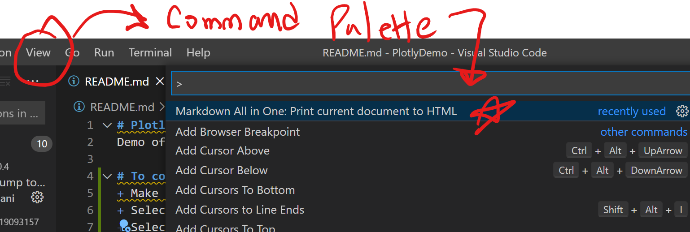

PlotlyDemo
Demo of Plotly functionality - Contours, LineCharts, HeatMaps
To convert this readme to HTML make sure of the following
- Make sure that "Mardown All in One" - yzhang.markdown-all-in-one is installed
- Select your .md file
- Select VSCODE menu View | Command Pallette
- Select the command Markdown All in One - Print current document to html
note
jnjn
class x{
x: 3.9;
}
Tip - to create html page from your md file, select menu option View | Command palette, then run Markdown all in one Print to html
